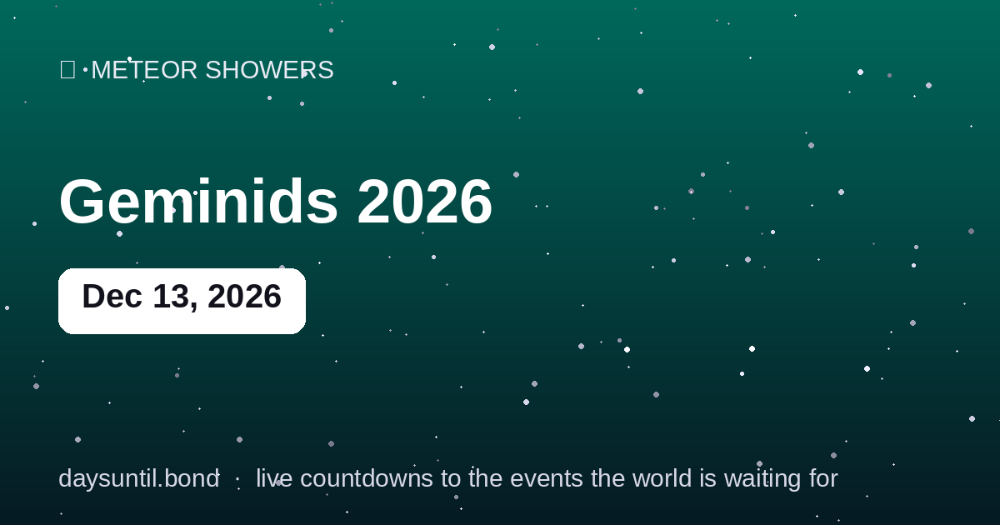

How Many Days Until Geminids 2026?
Geminids 2026 falls on Sunday, December 13, 2026.
The live counter above updates every second in your local time zone. The date and weekday are shown in the event details.

Quick facts
| Peak night | December 13–14, 2026 |
|---|---|
| Active dates | December 4–17, 2026 (NASA) |
| Dark-sky expectation | About 40–50 meteors per hour; conditions vary |
| Equipment | Naked eye; no telescope needed |
About Geminids 2026
The Geminids are expected to peak on the night of December 13–14, 2026, and remain active from December 4–17. NASA describes them as one of the most reliable annual meteor showers and says observers under dark skies may see about 40–50 meteors per hour; actual counts depend on local conditions.
The shower is associated with asteroid 3200 Phaethon. Choose a dark location, let your eyes adapt for 20–30 minutes, and watch a wide area of sky. The live countdown marks the expected peak night, not a guaranteed hourly count.
Geminids 2026 peak date and observing window
The Geminids are expected to peak around the night of December 13–14, 2026. NASA lists the shower as active from December 4–17 and describes it as one of the most reliable annual meteor showers. Activity can be good on the nights immediately before and after the maximum as well.
For a realistic observing expectation, NASA says dark-sky observers may see about 40–50 meteors per hour. That is not a guarantee: cloud, moonlight, light pollution, the radiant's height and the observer's location all change the number visible. Higher published zenithal hourly rates are standardized ideal-condition figures, not a personal forecast.
NASA's Geminids meteor shower guide provides the 2026 active window, peak dates and observing guidance. Recheck it and local sky conditions as the event approaches.
Why the Geminids are unusual
Most major meteor showers are associated with comets, but the Geminids are linked to asteroid 3200 Phaethon, an unusual object whose orbit brings it close to the Sun. Its dusty debris stream intersects Earth's orbit each December, producing the shower.
Geminid meteors are often bright and relatively slow compared with some other showers. Their radiant is in Gemini, near the bright stars Castor and Pollux, but meteors can appear anywhere in the sky. A wide naked-eye view is more useful than magnification.
Best time and conditions for viewing
The Geminid radiant rises during the evening and remains well placed for much of the night, so observers can often begin earlier than they would for showers whose radiant rises after midnight. Later hours may still offer excellent opportunities as the radiant climbs higher.
Choose a dark site, allow your eyes to adapt, and keep bright screens out of view. December weather can be cold, so dress warmly and use a reclining chair. If possible, observe for at least an hour rather than judging the shower from a brief glance.
How the Moon and light pollution affect the display
Moonlight can reduce the number of faint meteors visible, even when the shower itself is active. Urban skyglow has a similar effect. A rural site with a clear horizon will usually reveal many more meteors than a brightly lit town centre.
A published hourly rate assumes ideal conditions. For a realistic expectation, check the Moon's phase and position, local cloud cover and the radiant's altitude. A lower observed count does not mean the shower failed; it may simply reflect the sky conditions.
Geminids compared with other major showers
The Geminids close the calendar year after the Quadrantids in January, Lyrids in April, Perseids in August and Orionids and Leonids in autumn. Their high typical rate and evening accessibility make them a useful target for first-time meteor watchers.
For more dates and observing notes, browse the annual meteor shower schedule. Forecasts are updated as the peak approaches, so use the year-specific page rather than assuming every December return has identical conditions.
Your Geminids 2026 countdown milestones
It is easier to plan against fixed points than against a number that moves. These are the dates on which the countdown to Geminids 2026 passes each marker between now and the day itself — the last one falls on Saturday 12 December, when there will be 1 day left.
| Milestone | Day | Date | Remaining |
|---|---|---|---|
| 14 days | Sunday | 29 November 2026 | 14 days to go |
| 7 days | Sunday | 06 December 2026 | 7 days to go |
| 3 days | Thursday | 10 December 2026 | 3 days to go |
| 1 days | Saturday | 12 December 2026 | 1 day to go |
How the remaining time breaks down
15 days is the headline, but it is rarely the number that helps. 10 of those are weekdays and 5 fall on a weekend, which is the split that matters if you are planning around work. It is 2 weeks and 1 days, or roughly 0.5 months, or about 360 hours.
| Unit | Until Geminids 2026 |
|---|---|
| Days | 15 |
| Weeks | 2 weeks and 1 days |
| Months (approx) | 0.5 |
| Weekdays | 10 |
| Weekend days | 5 |
| Hours | 360 |
| Sleeps | 15 |
Working days are Monday to Friday and do not subtract public holidays, which vary by country and employer — the full month-by-month split is on our weekday page for Geminids 2026.